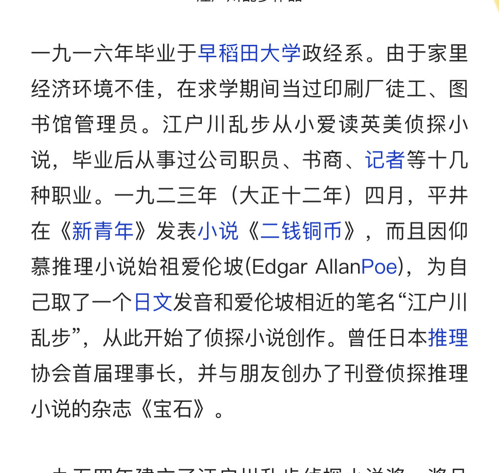
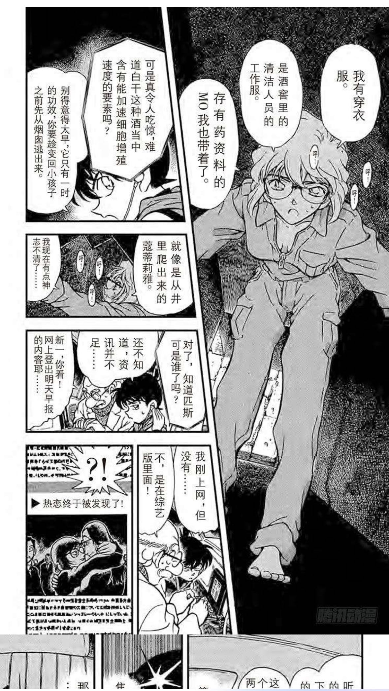
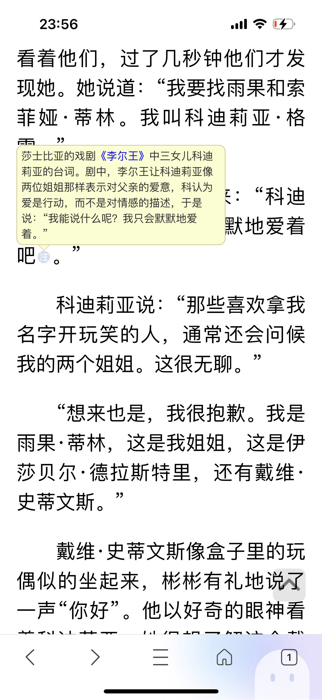
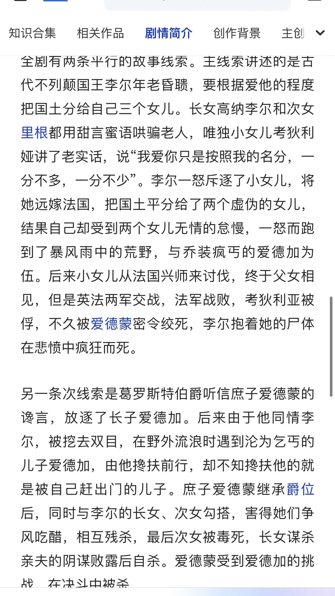
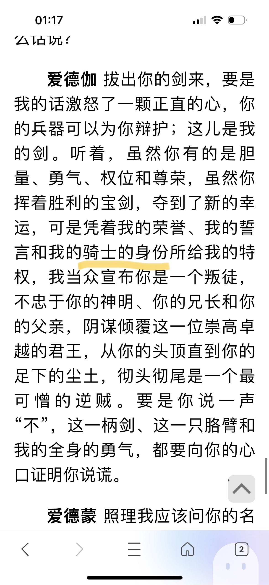
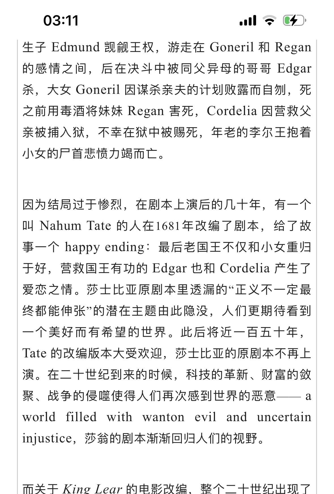
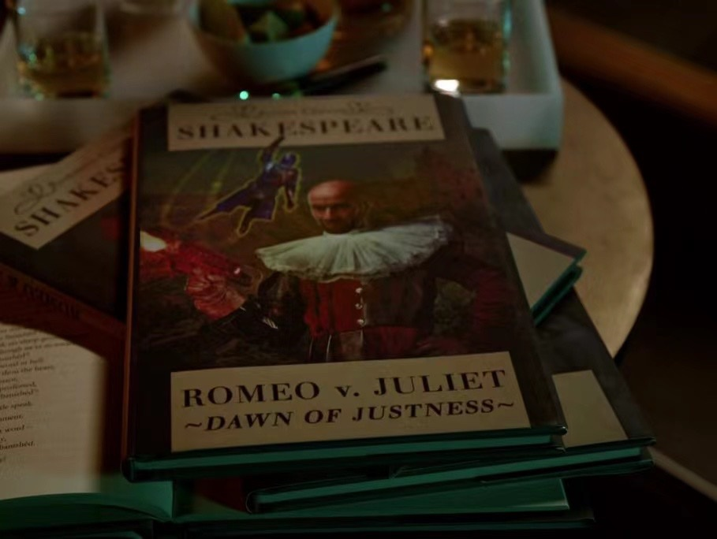

先说结论：
结论一：哀这个名字实际上是来自艾琳，灰原的“灰”也并非完全来自女侦探蔻蒂莉亚·葛雷（Gray），而是来自于《李尔王》中蔻蒂莉亚，同时《李尔王》中还能找到江户川。
结论二：哀的生日可能在圣诞节也是源于73对恋爱喜剧的执著（对比上一结论四大悲剧的《李尔王》）。
结论三：灰原的姓氏中的“原”谐音日语的蔷薇，可能这一设定来自艾琳娜是英国人。
结论四：灰原哀的代表色是紫色完全是谷子商业考虑，在漫画和设定中无法分析得出。
后面想到再补充。
结论一：哀这个名字实际上是来自艾琳，灰原的“灰”也并非完全来自女侦探蔻蒂莉亚·葛雷（Gray），而是来自于《李尔王》中蔻蒂莉亚，同时《李尔王》中还能找到江户川。
结论二：哀的生日可能在圣诞节也是源于73对恋爱喜剧的执著（对比上一结论四大悲剧的《李尔王》）。
结论三：灰原的姓氏中的“原”谐音日语的蔷薇，可能这一设定来自艾琳娜是英国人。
结论四：灰原哀的代表色是紫色完全是谷子商业考虑，在漫画和设定中无法分析得出。
后面想到再补充。
cy
结论一：哀这个名字实际上是来自艾琳，灰原的“灰”也并非完全来自女侦探蔻蒂莉亚·葛雷（Gray），而是来自于《李尔王》中蔻蒂莉亚，同时《李尔王》中还能找到江户川。
---------------------------------------------------------------------------------------------------------------------------
1.江户川的姓氏来自于江户川乱步，这个就算是云观众也知道。而江户川乱步本身也是个笔名，江户川乱步来自于推理小说始祖爱伦坡。
江户川乱步的罗马音是 Edogawa Ranpo
爱伦坡全名英文是 Edgar Allan poe（埃德加 爱 伦坡）
由上面读音可以看出江户川这个音节几乎就是 Edagar a 这几个字母音节变形，可以粗暴得出江户川来自于Edgar这个英文名，记住“Edgar”这个名字，他将会在《李尔王》中出现。
---------------------------------------------------------------------------------------------------------------------------
1.江户川的姓氏来自于江户川乱步，这个就算是云观众也知道。而江户川乱步本身也是个笔名，江户川乱步来自于推理小说始祖爱伦坡。

江户川柯南的罗马音是 Edogawa Conan江户川乱步的罗马音是 Edogawa Ranpo
爱伦坡全名英文是 Edgar Allan poe（埃德加 爱 伦坡）
由上面读音可以看出江户川这个音节几乎就是 Edagar a 这几个字母音节变形，可以粗暴得出江户川来自于Edgar这个英文名，记住“Edgar”这个名字，他将会在《李尔王》中出现。
赶上直播了
结论一：哀这个名字实际上是来自艾琳，灰原的“灰”也并非完全来自女侦探蔻蒂莉亚·葛雷（Gray），而是来自于《李尔王》中蔻蒂莉亚，同时《李尔王》中还能找到江户川。
---------------------------------------------------------------------------------------------------------------------------
2、漫画中通过博士之口，灰原的“灰”来自蔻蒂莉亚 葛雷（Cordelia Gary），这里的灰=gray ，看似跟Cordelia毫无关系。但是在黑衣组织再会篇，有再次call back了cordelia。
灰原的灰=gray=《一份不适合女人工作》的蔻蒂莉亚 葛雷=《李尔王》的蔻蒂莉亚
从这个吧友的提醒，我重新翻了《李尔王》，然后发现里面有Edgar，有Codelia，而且他们还陷于同样的命运。
---------------------------------------------------------------------------------------------------------------------------
2、漫画中通过博士之口，灰原的“灰”来自蔻蒂莉亚 葛雷（Cordelia Gary），这里的灰=gray ，看似跟Cordelia毫无关系。但是在黑衣组织再会篇，有再次call back了cordelia。

蔻蒂莉亚这个女侦探来自英国小说《一份不适合女人的工作》，巧合的是这个小说入围过爱伦坡（又是爱伦坡）最佳小说奖。根据文吧吧友的发现，蔻蒂莉亚 葛雷的名字本身就来自于《李尔王》中的蔻蒂莉亚。我放出《一份不适合女人的工作》小说截取。

从上图《一份不适合女人的工作》的节选，确定这个女侦探的名字就是来自于《李尔王》中的蔻蒂莉亚公主，并且还有名台词：“只能默默地爱”。这句话是不是很切合灰原哀？灰原的灰=gray=《一份不适合女人工作》的蔻蒂莉亚 葛雷=《李尔王》的蔻蒂莉亚
从这个吧友的提醒，我重新翻了《李尔王》，然后发现里面有Edgar，有Codelia，而且他们还陷于同样的命运。
cy，强啊
结论一：哀这个名字实际上是来自艾琳，灰原的“灰”也并非完全来自女侦探蔻蒂莉亚·葛雷（Gray），而是来自于《李尔王》中蔻蒂莉亚，同时《李尔王》中还能找到江户川。
---------------------------------------------------------------------------------------------------------------------------
3.福尔摩斯是英国人，艾琳娜是英国国籍，《李尔王》源于是英国的古老传说（传说并不是悲剧，李尔王从新登上王位），莎士比亚将其改编为现在大家熟知四大悲剧《李尔王》以下放出莎士比亚《李尔王》的故事简介。
---------------------------------------------------------------------------------------------------------------------------
3.福尔摩斯是英国人，艾琳娜是英国国籍，《李尔王》源于是英国的古老传说（传说并不是悲剧，李尔王从新登上王位），莎士比亚将其改编为现在大家熟知四大悲剧《李尔王》以下放出莎士比亚《李尔王》的故事简介。

从简介看出爱德加（Edgar）和蔻蒂莉亚（Cordelia）就是遭遇了相同的命运，受到兄弟or姐妹的挑拨加刚愎自用的父亲，不得不远离家乡，但两人的结局不同。一个远赴法兰西做了皇后（这里的queen划重点），后为救父被姐姐害死在牢里。一个不得不隐形埋名装作乞丐后终于手刃仇人继承爵位。ca党看到这里是不是很难过，但是73是个恋爱喜剧大魔王，《李尔王》也有恋爱喜剧版本，这个迟点再说，毕竟这个版本我查了好多资料，而且和圣诞有关。结论一：哀这个名字实际上是来自艾琳，灰原的“灰”也并非完全来自女侦探蔻蒂莉亚·葛雷（Gray），而是来自于《李尔王》中蔻蒂莉亚，同时《李尔王》中还能找到江户川。
---------------------------------------------------------------------------------------------------------------------------
4.在莎士比亚的《李尔王》中还能找到73非常喜欢的女王骑士梗。
《李尔王》中蔻蒂莉亚是英国的公主，然后因为不能为了哄老父亲被剥夺继承权（成为英国的女王queen）和假装，但是法兰西的国王还是爱上了她，赢取她作为了法国的queen，但是蔻蒂莉亚最后被姐姐绞死。提问，四小漫画哪里提及了被处于死刑的法国皇后？没错，就是来自《爱狗一族》中，小哀抱着那只叫“道尔”的狗灰言灰语：如果我像玛丽皇后一样样化作断头台上的露水的话,它会不会像她的爱犬迪比一样追随我投身于塞纳河里呢?
《李尔王》中的爱德加除了名字与江户川相似，所遭遇的情节与柯南也十分相似。爱德加受到兄弟的迫害不得不隐瞒身份变成乞丐，当他遇到被挖走双眼的父亲时，他还是隐瞒身份阻止父亲跳崖。这里跟向兰隐瞒身份的可难受是不是很像？爱德加是伯爵的长子，确实不是骑士，但他和弟弟决斗是，是装作一个蒙脸骑士（嗯，callback了危命的复活里新一的形象）。以下来自《李尔王》节选：
---------------------------------------------------------------------------------------------------------------------------
4.在莎士比亚的《李尔王》中还能找到73非常喜欢的女王骑士梗。
《李尔王》中蔻蒂莉亚是英国的公主，然后因为不能为了哄老父亲被剥夺继承权（成为英国的女王queen）和假装，但是法兰西的国王还是爱上了她，赢取她作为了法国的queen，但是蔻蒂莉亚最后被姐姐绞死。提问，四小漫画哪里提及了被处于死刑的法国皇后？没错，就是来自《爱狗一族》中，小哀抱着那只叫“道尔”的狗灰言灰语：如果我像玛丽皇后一样样化作断头台上的露水的话,它会不会像她的爱犬迪比一样追随我投身于塞纳河里呢?
《李尔王》中的爱德加除了名字与江户川相似，所遭遇的情节与柯南也十分相似。爱德加受到兄弟的迫害不得不隐瞒身份变成乞丐，当他遇到被挖走双眼的父亲时，他还是隐瞒身份阻止父亲跳崖。这里跟向兰隐瞒身份的可难受是不是很像？爱德加是伯爵的长子，确实不是骑士，但他和弟弟决斗是，是装作一个蒙脸骑士（嗯，callback了危命的复活里新一的形象）。以下来自《李尔王》节选：

，厉害啊！
结论一：哀这个名字实际上是来自艾琳，灰原的“灰”也并非完全来自女侦探蔻蒂莉亚·葛雷（Gray），而是来自于《李尔王》中蔻蒂莉亚，同时《李尔王》中还能找到江户川。
---------------------------------------------------------------------------------------------------------------------------
5.就如首楼所说，《李尔王》是莎士比亚改编自英国传说，《李尔王》中爱德加和蔻蒂莉亚并未什么浪漫关系，只是陷入了相似的命运（嗯，战友情）。但是英国观众也受不莎士比亚的悲剧，于是出现了改编版，改编如下：
所以73是选择大文豪莎士比亚的悲剧版本，还是一个篡改了悲剧结尾一百多年的三流作家的恋爱喜剧呢？
首先，73这个人喜欢恋爱喜剧，自称大魔王，他曾经认为秒速5厘米如果是喜剧，票房会更高，同时认为你的名字票房的成功是因为喜剧结尾（文吧看到的，大概意思，记得不是很清楚了）。然后Nahum Tate这个人和圣诞、宗教关系很密切。这次就不仔细分析了，今天结束，十一再说。
---------------------------------------------------------------------------------------------------------------------------
5.就如首楼所说，《李尔王》是莎士比亚改编自英国传说，《李尔王》中爱德加和蔻蒂莉亚并未什么浪漫关系，只是陷入了相似的命运（嗯，战友情）。但是英国观众也受不莎士比亚的悲剧，于是出现了改编版，改编如下：

在经过Nahum Tate的这个人改编，《李尔王》变成了恋爱喜剧，爱德加和蔻蒂莉亚不但变成了恋人，而且蔻蒂莉亚还继承了王位（英国queen）和恋人结婚了。所以73是选择大文豪莎士比亚的悲剧版本，还是一个篡改了悲剧结尾一百多年的三流作家的恋爱喜剧呢？
首先，73这个人喜欢恋爱喜剧，自称大魔王，他曾经认为秒速5厘米如果是喜剧，票房会更高，同时认为你的名字票房的成功是因为喜剧结尾（文吧看到的，大概意思，记得不是很清楚了）。然后Nahum Tate这个人和圣诞、宗教关系很密切。这次就不仔细分析了，今天结束，十一再说。
我想到 江戸读edo也可以写成穢土 秽土的河流对灰烬的平原 两人也都是“死过”的人
里面的拼写错误和错字就将就吧
哇趣，楼主太牛了 btw 立本人对英国人的执念真不是一般深
btw 立本人对英国人的执念真不是一般深
btw 立本人对英国人的执念真不是一般深好好好
感觉有些牵强。现在英国演lear基本都是莎剧原本的结局，没有见过所谓的喜剧改编版。
这个什么tate的改编版迎合的应该是维多利亚时代那种布尔乔亚口味，说白了就是低俗 至于什么女王骑士更不搭边了。
至于什么女王骑士更不搭边了。
莎剧里比较典型的“恋爱喜剧”有much ado和all‘s well，如果名柯人物名字有致敬里面角色的名字，什么Beatrice 啊Rosalind之类的，可能还能跟莎扯上一点点关系
这个什么tate的改编版迎合的应该是维多利亚时代那种布尔乔亚口味，说白了就是低俗
至于什么女王骑士更不搭边了。莎剧里比较典型的“恋爱喜剧”有much ado和all‘s well，如果名柯人物名字有致敬里面角色的名字，什么Beatrice 啊Rosalind之类的，可能还能跟莎扯上一点点关系
2023-09-27 10:35 | 埃蒙🌊利彼:这就涉及很多二创作者的创作心理了，有时候作为商业作品是需要像《小美人鱼》（动画）一样自创happy end结尾的，至于《李尔王》73把东西都藏起来了反正当初也没人看出来李尔王相关2023-09-27 11:14 | mangomengke07:回复 埃蒙🌊利彼 :现在感觉也没啥暗示呀2023-09-27 12:34 | 三三喝菠萝水☔:我还没写完2023-09-27 22:53 | mangomengke07:回复 三三喝菠萝水☔ :加油，我不是说要否定你哈，我也很期待你能说服我。还有一点就是，lear里的“骑士”形象真的非常负面感觉完全不配我们柯柯


我倒是觉得这些还真挺有可能的。因为符合创作者的逻辑，而这些巧合又互有联系。很多时候一个人物的某个设定不一定只有一个来源，当作者发现这个设定在另一个角度也能有所呼应、解释的通、可以构成第二条线索的时候，他很可能会沾沾自喜，并悄悄把新发现的这条线的其他元素埋进现有的剧情里。（这里的具体表现就是哀和各种queen的联系）可以有一种明面上的解释，同时也留一点线索给另一种解释作为彩蛋，如果有读者发现，那自然很高兴，如果没有人发现也不会损失重大伏笔。
针对恋爱喜剧问题，我认为这篇分析的重点在于江户川和灰原这两个姓的设定有可能是同源同宗的，且二人从某种剧情意义上来讲起着男女主的作用。仅仅如此，就足够了。
针对恋爱喜剧问题，我认为这篇分析的重点在于江户川和灰原这两个姓的设定有可能是同源同宗的，且二人从某种剧情意义上来讲起着男女主的作用。仅仅如此，就足够了。
有点意思，我先投一个（指投资）
莎士比亚的书我也看过

其实你看你截出来的《一份不适合女人的工作》的原文部分也能看出来，书中人物喜欢拿李尔王女儿寇蒂利亚跟女侦探开玩笑，并不代表女侦探的名字就是源于李尔王。Cordelia，法语coeur de lion，意为狮子之心，这更可能是pd James的取名含义。江户川来源于乱步，而乱步自己取笔名的时候致敬了爱伦坡，非要说江户川源自李尔王里的同名Edgar就有点牵强了，毕竟西方人的first name重复率惊人。主要我觉得73作为推理漫画家，在自己的作品和人物设定里致敬其他推理作家是很明显和自然的事情，非要说他挖空心思去致敬莎士比亚就有点奇怪了。